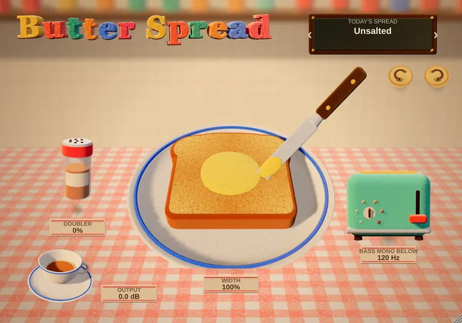
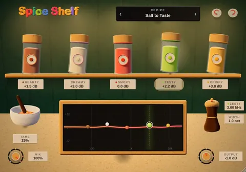
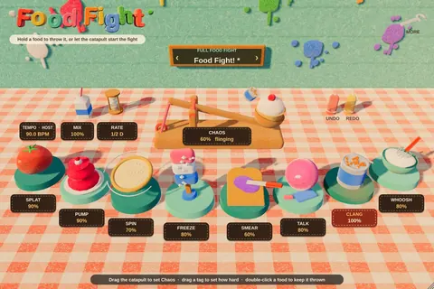
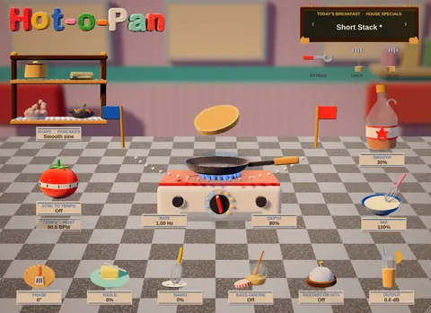

Free plugins, served warm
Breakfast is the most important meal of the day, so the first bite is on us.
Butter Spread: a free licence, with our compliments

Spread your mix wider, smooth as butter, and keep it safe in mono. Width from mono to 200%, a mono-safe doubler and a bass-mono lever. AU and VST3 for Mac, VST3 for Windows. Open source, too.
We're sending a few free Butter Spread licences to our customers. Would you like to try it?
Try a free licence Read the full recipeTaste everything else free for 3 days
Every plugin on the menu has a full 3-day free trial, no card needed. VST3, AU and AAX on Mac, VST3 on Windows.
 Orange CrusherDistortion and saturation plugin
Orange CrusherDistortion and saturation plugin Popping CandyGlitch and stutter plugin
Popping CandyGlitch and stutter plugin
Spice Shelf EQEQ plugin Popcorn Sandwich CompressorCompressor plugin
Popcorn Sandwich CompressorCompressor plugin Cherry on the Top MasteringMastering plugin
Cherry on the Top MasteringMastering plugin Spaghetti DelayDelay plugin
Spaghetti DelayDelay plugin Bread Oven ReverbReverb plugin
Bread Oven ReverbReverb plugin
Food FightPerformance multi-effect plugin Ghost Pepper ClipperClipper plugin
Ghost Pepper ClipperClipper plugin
Hot-o-PanAuto-pan plugin Gummy GateGate plugin
Gummy GateGate plugin Milkshake ChorusChorus plugin
Milkshake ChorusChorus plugin Burnt Toast Tape MachineTape saturation plugin
Burnt Toast Tape MachineTape saturation plugin Noodle FilterFilter plugin
Noodle FilterFilter plugin Muesli GranularGranular effect plugin
Muesli GranularGranular effect plugin
Questions
Are these plugins really free?
We're sending a few free Butter Spread licences to our customers: sign up and one is yours. Every other plugin has a full 3-day free trial with no card needed.
Which formats do the free plugins come in?
Butter Spread is AU and VST3 on Mac and VST3 on Windows. The trials are AU, VST3 and AAX on Mac and VST3 on Windows.
Do they work in Logic Pro, Ableton Live and FL Studio?
Yes, and in Cubase, Studio One, Reaper, Bitwig, GarageBand and Pro Tools (AAX, for the trials).